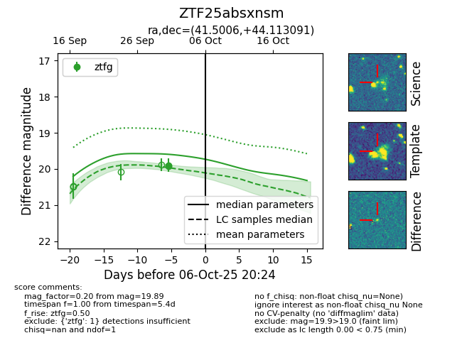
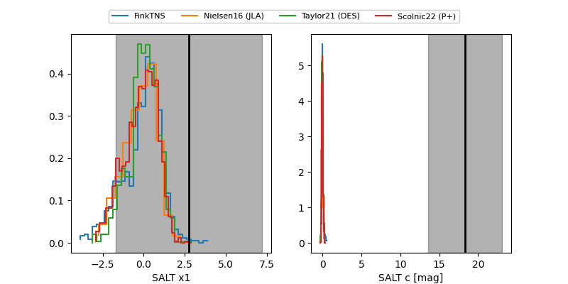

FINK: ZTF25absxnsm
Lasair: ZTF25absxnsm
ALeRCE: ZTF25absxnsm
ZTF25absxnsm (ztf,fink)
equatorial (ra, dec) = (41.5006,+44.11309)
galactic (l, b) = (143.7136,-14.08707)


last ztfg=19.89
1 ztfg detections